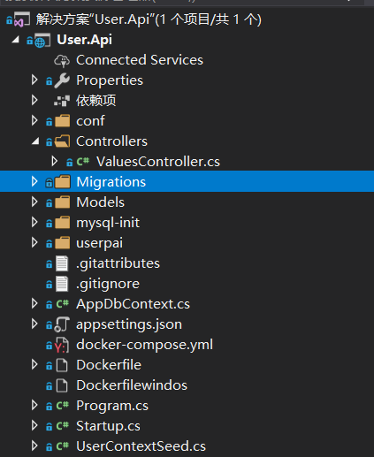
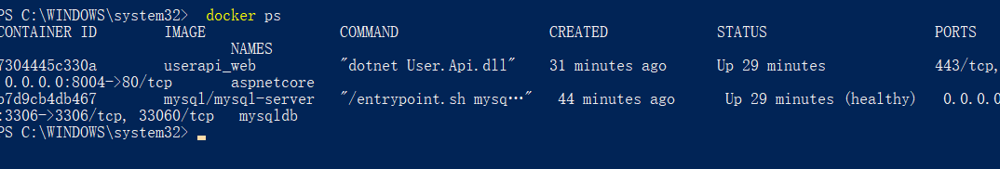
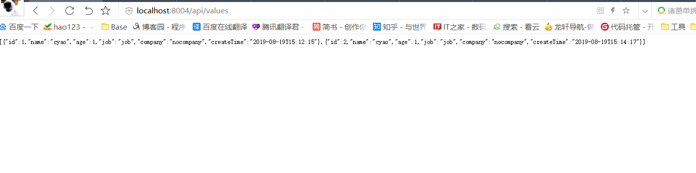

docker 客户端非常简单 ,我们可以直接输入 docker 命令来查看到 Docker 客户端的所有命令选项。
docker-compose 是什么
docker-compose 是一个用来把 docker 自动化的东西。
有了 docker-compose 你可以把所有繁复的 docker 操作全都一条命令，自动化的完成。
为什么要用 docker-compose，他解决了什么
用通俗的语言来说，我们平时操作 docker 还是很原始的一系列动作，你手动使用 docker 的动作可以拆分成
- 找到一个系统镜像 // docker search
- 安装好 vm 或者 virtual box // apt-get install docker
- 在 vm 中安装镜像 // docker run -d -it 你的镜像
- 略..
这是最小的动作， 如果你要映射硬盘，设置nat网络或者桥接网络，等等…你就要做更多的 docker 操作， 这显然是非常没有效率的。
但是我们写在 docker-compose.file 里面就很好了。 你只需要写好后 只运行一句docker-compose up
Docker Compose 常用命令与配置
常见命令
- ps：列出所有运行容器
docker-compose ps
- logs：查看服务日志输出
docker-compose logs
- port：打印绑定的公共端口，下面命令可以输出 eureka 服务 8761 端口所绑定的公共端口
docker-compose port eureka 8761
- build：构建或者重新构建服务
docker-compose build
- start：启动指定服务已存在的容器
docker-compose start eureka
- stop：停止已运行的服务的容器
docker-compose stop eureka
- rm：删除指定服务的容器
docker-compose rm eureka
- up：构建、启动容器
docker-compose up
- kill：通过发送 SIGKILL 信号来停止指定服务的容器
docker-compose kill eureka
- pull：下载服务镜像
- scale：设置指定服务运气容器的个数，以 service=num 形式指定
docker-compose scale user=3 movie=3
- run：在一个服务上执行一个命令
docker-compose run web bash
docker-compose.yml 属性
- version：指定 docker-compose.yml 文件的写法格式
- services：多个容器集合
- build：配置构建时，Compose 会利用它自动构建镜像，该值可以是一个路径，也可以是一个对象，用于指定 Dockerfile 参数
build: ./dir
build:
context: ./dir
dockerfile: Dockerfile
args:
buildno: 1
- command：覆盖容器启动后默认执行的命令
command: bundle exec thin -p 3000
command: [bundle,exec,thin,-p,3000]
- dns：配置 dns 服务器，可以是一个值或列表
dns: 8.8.8.8
dns:
- 8.8.8.8
- 9.9.9.9
- dns_search：配置 DNS 搜索域，可以是一个值或列表
dns_search: example.com
dns_search:
- dc1.example.com
- dc2.example.com
- environment：环境变量配置，可以用数组或字典两种方式
environment:
RACK_ENV: developmentSHOW: ‘ture’
environment:
- RACK_ENV=development
- SHOW=ture
- env_file：从文件中获取环境变量，可以指定一个文件路径或路径列表，其优先级低于 environment 指定的环境变量
env_file: .env
env_file:
- ./common.env
- expose：暴露端口，只将端口暴露给连接的服务，而不暴露给主机
expose:
- “3000”
- “8000”
- image：指定服务所使用的镜像
image: java
- network_mode：设置网络模式
network_mode: “bridge”
network_mode: “host”
network_mode: “none”
network_mode: “service:[service name]”
network_mode: “container:[container name/id]”
- ports：对外暴露的端口定义，和 expose 对应
ports: # 暴露端口信息 - “宿主机端口:容器暴露端口”
- “8763:8763”
- “8763:8763”
- links：将指定容器连接到当前连接，可以设置别名，避免ip方式导致的容器重启动态改变的无法连接情况
links: # 指定服务名称:别名
- docker-compose-eureka-server:compose-eureka
- volumes：卷挂载路径
volumes:
- /lib
- /var
- logs：日志输出信息
—no-color 单色输出，不显示其他颜.
-f, —follow 跟踪日志输出，就是可以实时查看日志
-t, —timestamps 显示时间戳
—tail 从日志的结尾显示，—tail=200
Docker Compose 其它
更新容器
- 当服务的配置发生更改时，可使用 docker-compose up 命令更新配置
- 此时，Compose 会删除旧容器并创建新容器，新容器会以不同的 IP 地址加入网络，名称保持不变，任何指向旧容起的连接都会被关闭，重新找到新容器并连接上去
links
- 服务之间可以使用服务名称相互访问，links 允许定义一个别名，从而使用该别名访问其它服务
version: ‘2’
services:
web:
build: .
links:- "db:database" db: image: postgres
- 这样 Web 服务就可以使用 db 或 database 作为 hostname 访问 db 服务了
使用dockers-compose
新建 项目 userapi

添加引用:
Microsoft.EntityFrameworkCore
Microsoft.EntityFrameworkCore.Design
Microsoft.EntityFrameworkCore.Tools
MySql.Data.EntityFrameworkCore
models 新建Users
1 | public class Users |
添加AppDbContext
1 | public class AppDbContext : DbContext |
配置文件添加数据库连接
1 | "ConnectionStrings": { |
Startup
ConfigureServices添加
1 | services.AddDbContext<AppDbContext>(options => |
1 | configrue 添加 InitDataBase(app); |
新建 ADD-Migrations init
这里需要注意mysql有的时候不会生成__EFMigrationsHistory表
可以在AppDbContextModelSnapshot 文件里添加
1 | modelBuilder.Entity("__EFMigrationsHistory", b => |
也可以自己在mysql中新建
1 | CREATE TABLE `__EFMigrationsHistory` |
新建文件Dockerfile.json
1 | FROM mcr.microsoft.com/dotnet/core/aspnet:2.2-stretch-slim AS base |
新建文件docker-compose.yml
1 | version: '3.3' |
init.sql 添加root 授权,并刷新权限:
ALTER USER ‘root’@’%’ IDENTIFIED WITH mysql_native_password BY ‘1234.’;
GRANT ALL PRIVILEGES ON . TO ‘root’@’%’ WITH GRANT OPTION;
flush privileges;
cmd 到项目目录
执行 : docker-compose up
指定dockers ps

我们看到项目已经发布成功了
浏览器看看

docker-compose命令通过指定文件运行
启动服务
docker-compose -f docker-compose.yml up -d
停止服务
docker-compose -f docker-compose.yml stop
停止并删除服务
docker-compose -f docker-compose.yml down
常用参数：
image
services:
web:
image: hello-world
在 services 标签下的第二级标签是 web，这个名字是用户自己自定义，它就是服务名称。
image 则是指定服务的镜像名称或镜像 ID。如果镜像在本地不存在，Compose 将会尝试拉取这个镜像。
例如下面这些格式都是可以的：
image: redis
image: ubuntu:14.04
image: tutum/influxdb
image: example-registry.com:4000/postgresql
image: a4bc65fd
build
2.1 基本用法
服务除了可以基于指定的镜像，还可以基于一份 Dockerfile，在使用 up 启动之时执行构建任务，这个构建标签就是 build，它可以指定 Dockerfile 所在文件夹的路径。Compose 将会利用它自动构建这个镜像，然后使用这个镜像启动服务容器。
指明绝对路径
build: /path/to/build/dir
指明相对路径，只要上下文确定就可以读取到 Dockerfile。
build: ./dir
设定上下文根目录，然后以该目录为准指定 Dockerfile。
build:
context: ../
dockerfile: path/of/Dockerfile
注意 build 都是一个目录，如果你要指定 Dockerfile 文件需要在 build 标签的子级标签中使用 dockerfile 标签指定，如上面的例子。
如果你同时指定了 image 和 build 两个标签，那么 Compose 会构建镜像并且把镜像命名为 image 后面的那个名字。
build: ./dir
image: webapp:tag
2.2 构建过程中的args标签
既然可以在 docker-compose.yml 中定义构建任务，那么一定少不了 arg 这个标签，就像 Dockerfile 中的 ARG 指令，它可以在构建过程中指定环境变量，但是在构建成功后取消，在 docker-compose.yml 文件中也支持这样的写法：
build:
context: .
args:
buildno: 1
password: secret
下面这种写法也是支持的，一般来说下面的写法更适合阅读。
build:
context: .
args:
- buildno=1
- password=secret
与 ENV 不同的是，ARG 是允许空值的。例如：
args:
- buildno
- password
这样构建过程可以向它们赋值。
注意：YAML 的布尔值（true, false, yes, no, on, off）必须要使用引号引起来（单引号、双引号均可），否则会当成字符串解析。
command
使用 command 可以覆盖容器启动后默认执行的命令。
command: bundle exec thin -p 3000
也可以写成类似 Dockerfile 中的格式：
command: [bundle, exec, thin, -p, 3000]
container_name
前面说过 Compose 的容器名称格式是：<项目名称><服务名称><序号>
虽然可以自定义项目名称、服务名称，但是如果你想完全控制容器的命名，可以使用这个标签指定：
container_name: app
这样容器的名字就指定为 app 了。
depends_on
在使用 Compose 时，最大的好处就是少打启动命令，但是一般项目容器启动的顺序是有要求的，如果直接从上到下启动容器，必然会因为容器依赖问题而启动失败。
例如在没启动数据库容器的时候启动了应用容器，这时候应用容器会因为找不到数据库而退出，为了避免这种情况我们需要加入一个标签，就是 depends_on，这个标签解决了容器的依赖、启动先后的问题。
例如下面容器会先启动 redis 和 db 两个服务，最后才启动 web 服务：
version: ‘2’
services:
web:
build: .
depends_on:- db - redisredis:
image: redis
db:
image: postgres
注意的是，默认情况下使用 docker-compose up web 这样的方式启动 web 服务时，也会启动 redis 和 db 两个服务，因为在配置文件中定义了依赖关系。
ports
映射端口的标签。
使用主机端口：容器端口格式 或者 只是指定容器的端口，宿主机会随机映射端口。
ports:
- “3000”
- “8000:8000”
- “49100:22”
- “127.0.0.1:8001:8001”
注意：当使用主机端口：宿主机端口格式来映射端口时，如果你使用的容器端口小于60你可能会得到错误得结果，因为YAML将会解析xx:yy这种数字格式为60进制，所以建议使用字符串格式
links
还记得上面的depends_on吧，那个标签解决的是启动顺序问题，这个标签解决的是容器连接问题，与Docker client的—link一样效果，会连接到其它服务中的容器。
格式如下：
links:
- db
- db:database
- redis
使用的别名将会自动在服务容器中的/etc/hosts里创建。例如：
172.12.2.186 db
172.12.2.186 database
172.12.2.187 redis
相应的环境变量也将被创建。
volumes
挂载一个目录或者一个已存在的数据卷容器，可以直接使用 [HOST:CONTAINER] 这样的格式，或者使用 [HOST:CONTAINER:ro] 这样的格式，后者对于容器来说，数据卷是只读的，这样可以有效保护宿主机的文件系统。
Compose的数据卷指定路径可以是相对路径，使用 . 或者 .. 来指定相对目录。
数据卷的格式可以是下面多种形式：
volumes:
只是指定一个路径，Docker 会自动在创建一个数据卷（这个路径是容器内部的）。
/var/lib/mysql
使用绝对路径挂载数据卷
/opt/data:/var/lib/mysql
以 Compose 配置文件为中心的相对路径作为数据卷挂载到容器。
./cache:/tmp/cache
使用用户的相对路径（~/ 表示的目录是 /home/<用户目录>/ 或者 /root/）。
~/configs:/etc/configs/:ro
已经存在的命名的数据卷。
- datavolume:/var/lib/mysql
如果你不使用宿主机的路径，你可以指定一个volume_driver。 比如 —> volume_driver: mydriver
environment
与上面的 env_file 标签完全不同，反而和 arg 有几分类似，这个标签的作用是设置镜像变量，它可以保存变量到镜像里面，也就是说启动的容器也会包含这些变量设置，这是与 arg 最大的不同。
一般 arg 标签的变量仅用在构建过程中。而 environment 和 Dockerfile 中的 ENV 指令一样会把变量一直保存在镜像、容器中，类似 docker run -e 的效果，两种写法。
environment:
RACK_ENV: development
SHOW: ‘true’
SESSION_SECRET:environment:
- RACK_ENV=development
- SHOW=true
- SESSION_SECRET
external_links
在使用Docker过程中，我们会有许多单独使用docker run启动的容器，为了使Compose能够连接这些不在docker-compose.yml中定义的容器，我们需要一个特殊的标签，就是external_links，它可以让Compose项目里面的容器连接到那些项目配置外部的容器（前提是外部容器中必须至少有一个容器是连接到与项目内的服务的同一个网络里面）。
格式如下：
external_links:
- redis_1
- project_db_1:mysql
- project_db_1:postgresql
非常用参数
dns
和 —dns 参数一样用途，格式如下：
dns: 8.8.8.8
也可以是一个列表：
dns:
- 8.8.8.8
- 9.9.9.9
此外 dns_search 的配置也类似：
dns_search: example.com
dns_search:
- dc1.example.com
- dc2.example.com
tmpfs
挂载临时目录到容器内部，与 run 的参数一样效果：
tmpfs: /run
tmpfs:
- /run
- /tmp
entrypoint
在 Dockerfile 中有一个指令叫做 ENTRYPOINT 指令，用于指定接入点，第四章有对比过与 CMD 的区别。
在 docker-compose.yml 中可以定义接入点，覆盖 Dockerfile 中的定义：
entrypoint: /code/entrypoint.sh
格式和 Docker 类似，不过还可以写成这样：
entrypoint:
- php
- -d
- zend_extension=/usr/local/lib/php/extensions/no-debug-non-zts-20100525/xdebug.so
- -d
- memory_limit=-1
- vendor/bin/phpunit
env_file
还记得前面提到的 .env 文件吧，这个文件可以设置 Compose 的变量。而在 docker-compose.yml 中可以定义一个专门存放变量的文件。
如果通过 docker-compose -f FILE 指定了配置文件，则 env_file 中路径会使用配置文件路径。
如果有变量名称与 environment 指令冲突，则以后者为准。格式如下：
env_file: .env
或者根据 docker-compose.yml 设置多个：
env_file:
- ./common.env
- ./apps/web.env
- /opt/secrets.env
注意的是这里所说的环境变量是对宿主机的 Compose 而言的，如果在配置文件中有 build 操作，这些变量并不会进入构建过程中，如果要在构建中使用变量还是首选前面刚讲的 arg 标签。
expose
这个标签与Dockerfile中的EXPOSE指令一样，用于指定暴露的端口，但是只是作为一种参考，实际上docker-compose.yml的端口映射还得ports这样的标签。
expose:
- “3000”
- “8000”
extra_hosts
添加主机名的标签，就是往/etc/hosts文件中添加一些记录，与Docker client的—add-host类似：
extra_hosts:
- “somehost:162.242.195.82”
- “otherhost:50.31.209.229”
启动之后查看容器内部hosts：
162.242.195.82 somehost
50.31.209.229 otherhost
labels
向容器添加元数据，和Dockerfile的LABEL指令一个意思，格式如下：
labels:
com.example.description: “Accounting webapp”
com.example.department: “Finance”
com.example.label-with-empty-value: “”
labels:
- “com.example.description=Accounting webapp”
- “com.example.department=Finance”
- “com.example.label-with-empty-value”
logging
这个标签用于配置日志服务。格式如下：
logging:
driver: syslog
options:
syslog-address: “tcp://192.168.0.42:123”
默认的driver是json-file。只有json-file和journald可以通过docker-compose logs显示日志，其他方式有其他日志查看方式，但目前Compose不支持。对于可选值可以使用options指定。
有关更多这方面的信息可以阅读官方文档：
1 | https://link.jianshu.com/?t=https://docs.docker.com/engine/admin/logging/overview/ |
pid
pid: “host”
将PID模式设置为主机PID模式，跟主机系统共享进程命名空间。容器使用这个标签将能够访问和操纵其他容器和宿主机的名称空间。
security_opt
为每个容器覆盖默认的标签。简单说来就是管理全部服务的标签。比如设置全部服务的user标签值为USER。
security_opt:
- label:user:USER
- label:role:ROLE
stop_signal
设置另一个信号来停止容器。在默认情况下使用的是SIGTERM停止容器。设置另一个信号可以使用stop_signal标签。
stop_signal: SIGUSR1
volumes_from
从其它容器或者服务挂载数据卷，可选的参数是 :ro或者 :rw，前者表示容器只读，后者表示容器对数据卷是可读可写的。默认情况下是可读可写的。
volumes_from:
- service_name
- service_name:ro
- container:container_name
- container:container_name:rw
cap_add, cap_drop
添加或删除容器的内核功能。详细信息在前面容器章节有讲解，此处不再赘述。
cap_add:
- ALL
cap_drop:
- NET_ADMIN
- SYS_ADMIN
cgroup_parent
指定一个容器的父级cgroup。
cgroup_parent: m-executor-abcd
devices
设备映射列表。与Docker client的—device参数类似。
devices:
- “/dev/ttyUSB0:/dev/ttyUSB0”
extends
这个标签可以扩展另一个服务，扩展内容可以是来自在当前文件，也可以是来自其他文件，相同服务的情况下，后来者会有选择地覆盖原有配置。
extends:
file: common.yml
service: webapp
用户可以在任何地方使用这个标签，只要标签内容包含file和service两个值就可以了。file的值可以是相对或者绝对路径，如果不指定file的值，那么Compose会读取当前YML文件的信息。
更多的操作细节在后面的12.3.4小节有介绍。
network_mode
网络模式，与Docker client的—net参数类似，只是相对多了一个service:[service name] 的格式。
例如：
network_mode: “bridge”
network_mode: “host”
network_mode: “none”
network_mode: “service:[service name]”
network_mode: “container:[container name/id]”
可以指定使用服务或者容器的网络。
networks
加入指定网络，格式如下：
services:
some-service:
networks:- some-network - other-network
关于这个标签还有一个特别的子标签aliases，这是一个用来设置服务别名的标签，例如：
services:
some-service:
networks:
some-network:
aliases:- alias1 - alias3 other-network: aliases: - alias2
相同的服务可以在不同的网络有不同的别名。
其它
还有这些标签：cpu_shares, cpu_quota, cpuset, domainname, hostname, ipc, mac_address, mem_limit, memswap_limit, privileged, read_only, restart, shm_size, stdin_open, tty, user, working_dir
上面这些都是一个单值的标签，类似于使用docker run的效果。
cpu_shares: 73
cpu_quota: 50000
cpuset: 0,1user: postgresql
working_dir: /codedomainname: foo.com
hostname: foo
ipc: host
mac_address: 02:42:ac:11:65:43mem_limit: 1000000000
memswap_limit: 2000000000
privileged: truerestart: always
read_only: true
shm_size: 64M
stdin_open: true
tty: true

...
...
Copyright 2021 sunfy.top ALL Rights Reserved